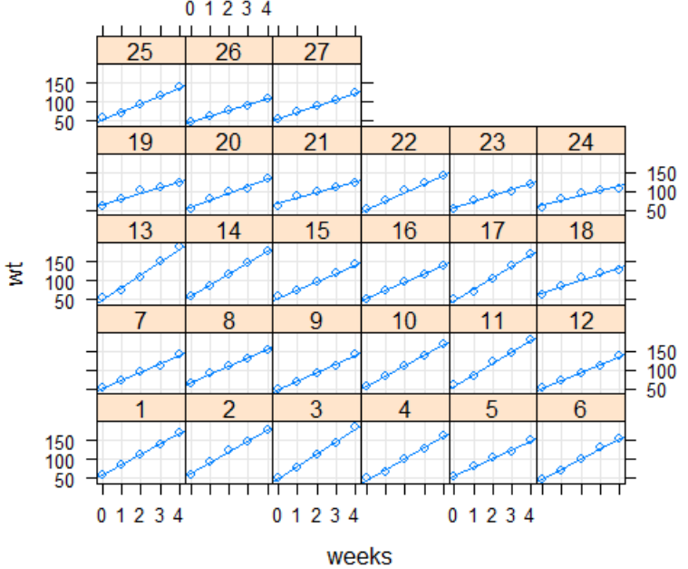

Worked Example — Assignment 10 Solution (อ่านต่อจาก Lesson 14)
lmer() Output กับโจทย์จริงบทนี้ไม่มีทฤษฎีใหม่ — เป็นการเอาทักษะทั้งหมดจาก Lesson 14 (แยก fixed/random effect, เขียนสมการ lmer(), อ่านบล็อก Random effects/Fixed effects ของ summary(), เลือกวิธีทดสอบนัยสำคัญ) มาใช้กับ Assignment 10 จริงสองข้อ: eggprod (fixed treatment effect + random block effect, ทดสอบด้วย Kenward-Roger และ bootstrap CI) และ ratdrink (repeated-measures บนหนู 27 ตัว, เทียบ random intercept กับ random slope ด้วย AIC, แล้วทำนายค่าใหม่แบบเฉพาะบุคคล) ทุกตัวเลขในหน้านี้ copy มาจาก Assignment10_Solution.pdf ตรง ๆ ไม่มีตัวเลขที่แต่งขึ้นเอง
ข้อมูล eggprod (package faraway): ไก่ 6 ตัวต่อกรง วาง 12 กรง แบ่งเป็น 4 block ตามทำเลที่ตั้ง (block ละ 3 กรง) แต่ละกรงได้รับ 1 ใน 3 treatment (E, F, O) นับจำนวนไข่ที่ได้
> library(faraway); data(eggprod)
> library(lme4)
> lmmmodel <- lmer(eggs~treat+(1|block), data=eggprod)
> summary(lmmmodel)
Linear mixed model fit by REML ['lmerMod']
Formula: eggs ~ treat + (1 | block)
REML criterion at convergence: 85.4
Random effects:
Groups Name Variance Std.Dev.
block (Intercept) 129.9 11.40
Residual 386.9 19.67
Number of obs: 12, groups: block, 4
Fixed effects:
Estimate Std. Error t value
(Intercept) 349.00 11.37 30.702
treatF -6.25 13.91 -0.449
treatO -42.50 13.91 -3.056block (Intercept) variance = 129.9 (SD = 11.40) — ความแปรปรวนของ intercept เฉพาะ block แต่ละแห่ง รอบค่าเฉลี่ยประชากรResidual variance = 386.9 (SD = 19.67) — ความแปรปรวนที่เหลือหลังหัก treatment กับ block ออกแล้วNumber of obs: 12, groups: block, 4 — ตรงกับโครงสร้างโจทย์: 12 กรง จัดกลุ่มเป็น 4 block(Intercept) = 349.00 — จำนวนไข่เฉลี่ยของ treatment E (baseline ที่ R ตัดให้อัตโนมัติ)treatF = -6.25 — ไก่ที่ได้ treatment F ผลิตไข่น้อยกว่าไก่ที่ได้ treatment E โดยเฉลี่ย 6.25 ฟองtreatO = -42.50 — ไก่ที่ได้ treatment O ผลิตไข่น้อยกว่าไก่ที่ได้ treatment E โดยเฉลี่ย 42.50 ฟอง (ขนาดผลใหญ่กว่า treatF มาก)> library(lmerTest)
> summary(lmmmodel, ddf = "Kenward-Roger")
Fixed effects:
Estimate Std. Error df t value Pr(>|t|)
(Intercept) 349.00 11.37 7.99 30.702 1.4e-09 ***
treatF -6.25 13.91 6.00 -0.449 0.6690
treatO -42.50 13.91 6.00 -3.056 0.0224 *treatF: p = 0.6690 > 0.05 — ไม่มีหลักฐานเพียงพอว่า treatment F ต่างจาก treatment EtreatO: p = 0.0224 < 0.05 — มีนัยสำคัญที่ระดับ 5% สรุปว่า treatment มีผลต่อจำนวนไข่ (อย่างน้อย treatment O ต่างจาก E จริง)df ที่ประมาณด้วย Kenward-Roger ไม่ใช่ \(n-p\) ธรรมดา — เหมือนที่ Lesson 14 หัวข้อ 10 อธิบายไว้ว่า mixed model ไม่มี df ชัดเจนแบบ lm()> confint(lmmmodel, method="boot", nsim=1000)
2.5 % 97.5 %
.sig01 0.000000 25.03390
.sigma 9.130138 28.95898
(Intercept) 325.413746 372.54506
treatF -33.463300 23.17780
treatO -70.998224 -13.52348.sig01 = SD ของ random intercept (block) — 95% CI = (0, 25.03)lmer(eggs~treat+(1|block), data=eggprod) เหตุผลใดถูกต้องที่สุดที่ทำให้ block ควรเป็น random effect แทนที่จะเป็น fixed effect?ข้อมูล ratdrink (package faraway): น้ำหนักตัวหนู 27 ตัว วัดซ้ำ 5 ครั้งต่อสัปดาห์ (weeks) หนู 10 ตัวแรกเป็นกลุ่มควบคุม อีก 7 ตัวได้ thyroxine ในน้ำดื่ม และอีก 10 ตัวได้ thiouracil — นี่คือ longitudinal data ตรงตามนิยาม Lesson 14 หัวข้อ 1: วัดผลลัพธ์ซ้ำกับหน่วยเดิม (หนู) ข้ามเวลา
> library(lattice)
> xyplot(wt ~ weeks| subject, ratdrink, type = c("g","p","r"))
ทุกตัวเริ่มจากน้ำหนักใกล้เคียงกันที่สัปดาห์ 0 (ราว 50-75 กรัม) แต่เส้นแนวโน้มของแต่ละตัวชันไม่เท่ากัน — บางตัวน้ำหนักพุ่งขึ้นไปเกิน 150-180 กรัมภายในสัปดาห์ที่ 4 ในขณะที่บางตัว (ส่วนใหญ่อยู่ในกลุ่มที่ได้ thiouracil) น้ำหนักเพิ่มช้ากว่า จบที่ราว 120-140 กรัมเท่านั้น — ตรงกับที่เฉลยเขียนไว้ตรง ๆ ว่า "เห็นความแตกต่างของ slope ชัดเจน ส่วน intercept ใกล้เคียงกัน"
wt~treat+weeks+(1|subject)> model1 <- lmer(wt~treat+weeks+(1|subject), ratdrink)
> summary(model1)
REML criterion at convergence: 1031.1
Random effects:
Groups Name Variance Std.Dev.
subject (Intercept) 60.42 7.773
Residual 105.15 10.254
Number of obs: 135, groups: subject, 27
Fixed effects:
Estimate Std. Error df t value Pr(>|t|)
(Intercept) 59.4770 3.1150 33.7809 19.094 < 2e-16 ***
treatthiouracil -13.9600 4.0361 24.0000 -3.459 0.00204 **
treatthyroxine 0.5314 4.4476 24.0000 0.119 0.90588
weeks 23.1815 0.6241 107.0000 37.146 < 2e-16 ***Number of obs: 135 = 27 หนู × 5 สัปดาห์ (135 แถว)weeks = 23.1815 — น้ำหนักเพิ่มขึ้นเฉลี่ย 23.18 กรัม/สัปดาห์ (fixed slope เดียว บังคับให้ทุกตัวเพิ่มอัตราเดียวกัน เพราะยังไม่มี random slope)treatthiouracil = -13.96, p = 0.00204 ** — หนูกลุ่ม thiouracil หนักน้อยกว่ากลุ่มควบคุมโดยเฉลี่ย 13.96 กรัม (มีนัยสำคัญ)treatthyroxine = 0.5314, p = 0.90588 — ไม่มีหลักฐานว่ากลุ่ม thyroxine ต่างจากกลุ่มควบคุมwt~treat+weeks+(weeks|subject)> model2 <- lmer(wt~treat+weeks+(weeks|subject), ratdrink)
> summary(model2)
REML criterion at convergence: 908.7
Random effects:
Groups Name Variance Std.Dev. Corr
subject (Intercept) 36.14 6.012
weeks 35.49 5.958 -0.33
Residual 18.91 4.348
Number of obs: 135, groups: subject, 27
Fixed effects:
Estimate Std. Error df t value Pr(>|t|)
(Intercept) 54.2435 2.0848 24.3467 26.018 <2e-16 ***
treatthiouracil 0.9068 2.8670 23.9998 0.316 0.755
treatthyroxine -0.5203 3.1593 23.9998 -0.165 0.871
weeks 23.1815 1.1767 26.0005 19.701 <2e-16 ***
> AIC(model1, model2)
df AIC
model1 6 1043.0934
model2 8 924.6622Corr = -0.33 ระหว่าง intercept กับ slope ของแต่ละตัวResidual variance ลดฮวบจาก 105.15 (model1) เหลือ 18.91 (model2) — เพราะความแปรปรวนที่เคยถูกเหมารวมเป็น "noise" ใน model1 ถูกอธิบายได้ด้วย random slope แล้วส่วนใหญ่AIC: model1 = 1043.09, model2 = 924.66 — model2 ต่ำกว่ามาก แม้จะมีพารามิเตอร์เพิ่ม (df=8 เทียบกับ 6) → เลือก model2treatthiouracil เปลี่ยนไปเมื่อโครงสร้าง random effect เปลี่ยน — significant ใน model1 (p=0.00204) แต่ไม่ significant ใน model2 (p=0.755) เพราะ model1 ไม่มี random slope จึงต้องยัดความแตกต่างของอัตราการโตระหว่างหนูแต่ละตัวไปไว้ในค่าประมาณของ treatment/intercept แทน ทำให้ SE ประเมินผิดทาง — นี่คือเหตุผลเดียวกับที่ Lesson 14 หัวข้อ 8 อธิบายไว้ว่า SE ของ Days เปลี่ยนเกือบเท่าตัวเมื่อเพิ่ม random slope เข้าไปในโมเดล sleepstudyAIC(model1, model2) ของ ratdrink (model1 df=6 AIC=1043.0934, model2 df=8 AIC=924.6622) จงอธิบาย (ก) ทำไมเลือก model2 ทั้งที่มีพารามิเตอร์มากกว่า และ (ข) สังเกตอะไรเกี่ยวกับนัยสำคัญของ treatthiouracil ระหว่างสองโมเดล พร้อมเหตุผล(ก) แม้ model2 จะมีพารามิเตอร์มากกว่า (df=8 เทียบกับ df=6 ของ model1) แต่ AIC ของ model2 (924.66) ต่ำกว่า model1 (1043.09) มาก — AIC ลงโทษความซับซ้อนของโมเดลไว้ในสูตรอยู่แล้ว (2×df) ดังนั้นส่วนต่าง ~118 หน่วยนี้มากเกินกว่าจะอธิบายได้ด้วยพารามิเตอร์ที่เพิ่มขึ้นเพียง 2 ตัว จึงสรุปว่า model2 (random intercept + random slope) เหมาะกับข้อมูลมากกว่าจริง ๆ ตรงกับที่เห็นในภาพ xyplot ว่าอัตราการโตต่างกันชัดเจนระหว่างหนู
(ข) treatthiouracil มีนัยสำคัญใน model1 (estimate=-13.96, p=0.00204) แต่ไม่มีนัยสำคัญใน model2 (estimate=0.9068, p=0.755) — เพราะ model1 ไม่มี random slope จึงบังคับให้ความแตกต่างของอัตราการโตระหว่างหนูแต่ละตัว (ซึ่งจริง ๆ เป็นความแตกต่างระดับบุคคล ไม่ใช่ผลของ treatment) ไปปรากฏเป็นส่วนหนึ่งของค่าประมาณ treatment effect และ residual variance แทน ทำให้ผลลัพธ์คลาดเคลื่อน — เมื่อใส่ random slope เข้าไปถูกต้องแล้ว (model2) ตัวแปร treatment แสดงว่าไม่มีผลต่ออัตราการโตอย่างมีนัยสำคัญจริง ๆ
หนู #27 อยู่ในกลุ่ม thiouracil ข้อมูลจริงมีแค่สัปดาห์ 0-4 ต่อตัว การทำนายที่สัปดาห์ 5-6 จึงเป็น extrapolation (นอกช่วงข้อมูลที่สังเกตมา — คำเตือนเดียวกับ Lesson 1)
> newdata <- data.frame(weeks=5:6,
+ subject=factor(c(27,27), levels=levels(ratdrink$subject)),
+ treat=factor(c("thiouracil","thiouracil"), levels=levels(ratdrink$treat)))
> predict(model2, newdata)
1 2
139.4674 156.5095subject=27 ใน newdata ไม่ใช่แค่ weeks กับ treat — เพราะ predict() ต้องรู้ว่าจะดึง BLUP (ค่าประมาณ random intercept + random slope) ของหนูตัวไหนมาบวกกับ fixed effect ถ้าไม่ระบุ subject จะได้แค่ค่าทำนายระดับประชากรเฉลี่ย (fixed effect อย่างเดียว) เหมือนตัวอย่าง subject 308 ใน Lesson 14 หัวข้อ 13fixef() อย่างเดียวกับ predict() ที่ระบุ subject: อย่างหลังให้คำทำนาย "เฉพาะบุคคล" ไม่ใช่ "ค่าเฉลี่ยประชากร"predict(model2, newdata) จงอธิบาย (ก) ทำไม newdata ต้องมีคอลัมน์ subject=27 ไม่ใช่แค่ weeks กับ treat และ (ข) ทำไมการทำนายที่สัปดาห์ 5 และ 6 ถือเป็น extrapolation(ก) โมเดล model2 มี random intercept และ random slope เฉพาะแต่ละ subject (BLUP จาก ranef()) ถ้า newdata ไม่ระบุ subject ฟังก์ชัน predict() จะไม่รู้ว่าต้องใช้ค่าเบี่ยงเบนเฉพาะตัวของหนูตัวไหนมาบวกกับ fixed effect ได้แค่คำนวณค่าทำนายระดับ "ค่าเฉลี่ยประชากร" จาก fixed effect อย่างเดียว (เหมือน fixef()) การระบุ subject=27 ทำให้ได้คำทำนายที่จำเพาะเจาะจงกับหนูตัวนี้จริง ๆ
(ข) ข้อมูลจริงของ ratdrink มีแค่ 5 ครั้งวัดต่อหนูหนึ่งตัว ครอบคลุมสัปดาห์ 0 ถึง 4 เท่านั้น การทำนายที่สัปดาห์ 5 และ 6 จึงเป็นค่านอกช่วงข้อมูลที่เคยสังเกตมา (extrapolation) เหมือนตัวอย่าง sleepstudy ใน Lesson 14 ที่ทำนาย Days=10-12 ทั้งที่ข้อมูลจริงมีแค่ Days=0-9 — ต้องระวังว่าความสัมพันธ์เชิงเส้นที่ฟิตในช่วงข้อมูลจริงอาจไม่ต่อเนื่องแบบเดิมนอกช่วงนั้น
Corr = -0.33 ระหว่าง random intercept กับ random slope ของ weeks ค่านี้ตีความว่าอย่างไร?lmer() formula ให้ตรงกับโครงสร้างข้อมูลก่อนเสมอ (grouping factor ไหนเป็น random, ตัวแปรไหนควรมี random slope ด้วย — plot แยกทีละกลุ่ม/บุคคลก่อนตัดสินใจ)newdata เสมอ ไม่งั้นจะได้แค่ค่าเฉลี่ยประชากรบทนี้ครอบคลุมทั้งสองข้อของ Assignment 10 (eggprod และ ratdrink) ครบทุกข้อย่อย (a)-(c) จาก Assignment10_Solution.pdf ทั้ง 4 หน้า